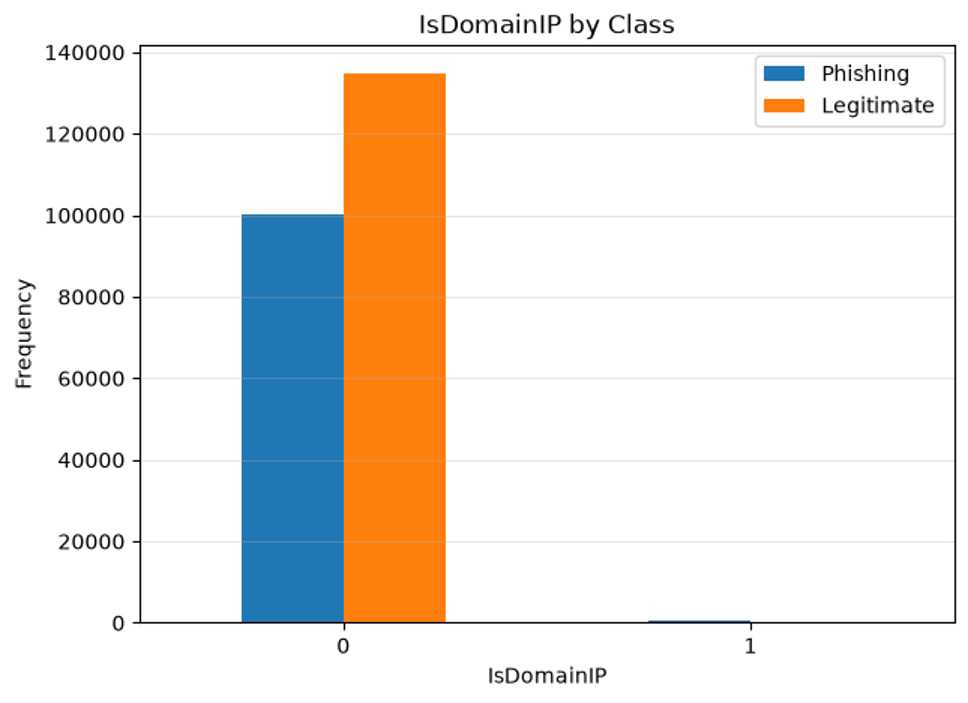
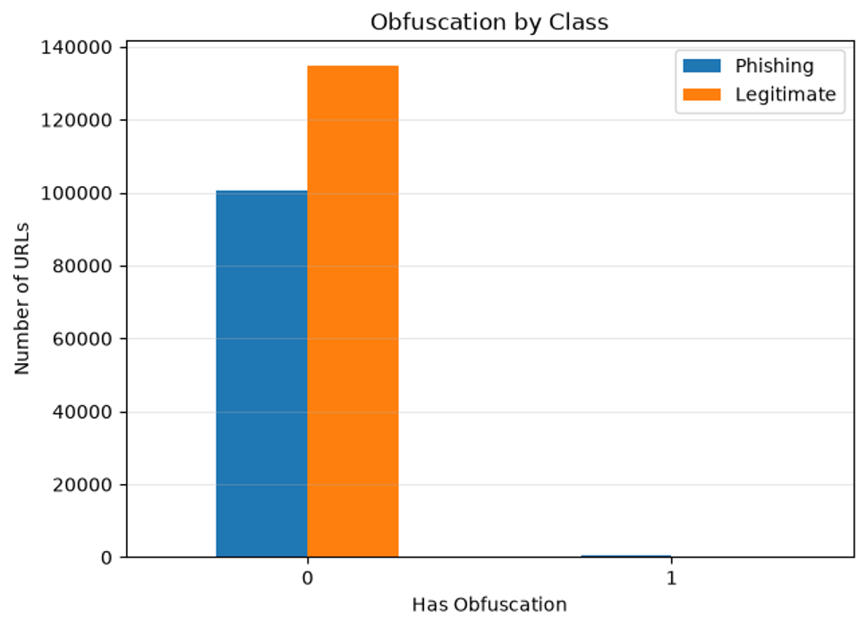
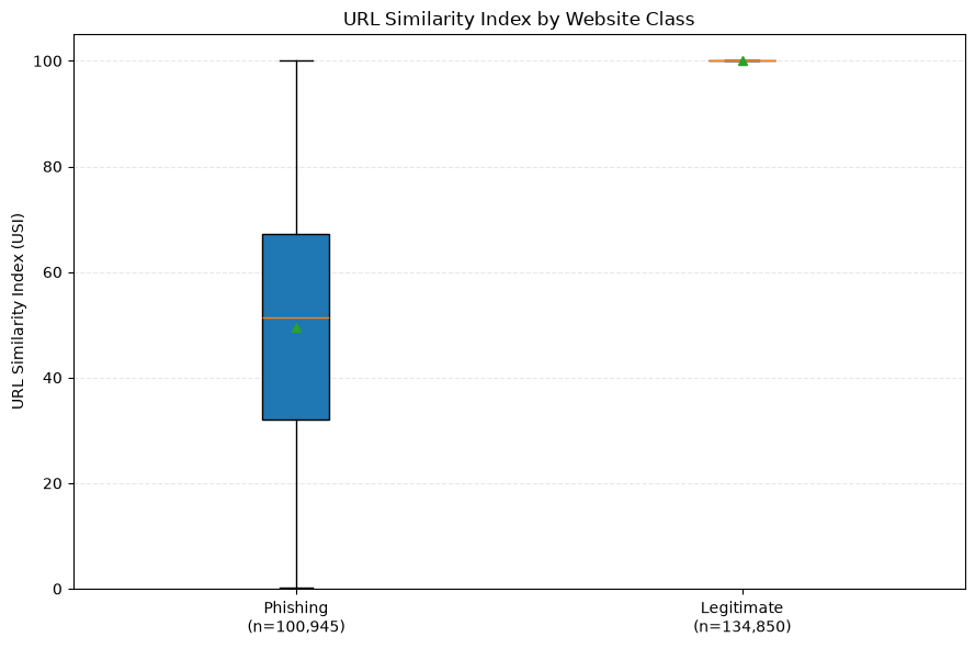
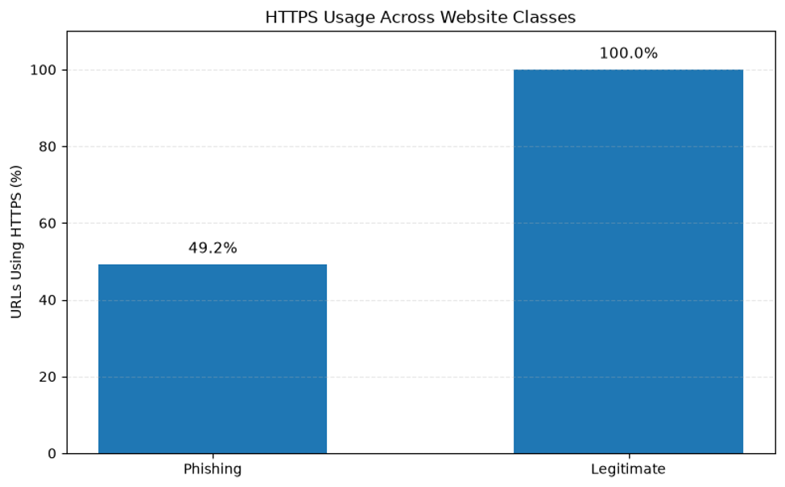
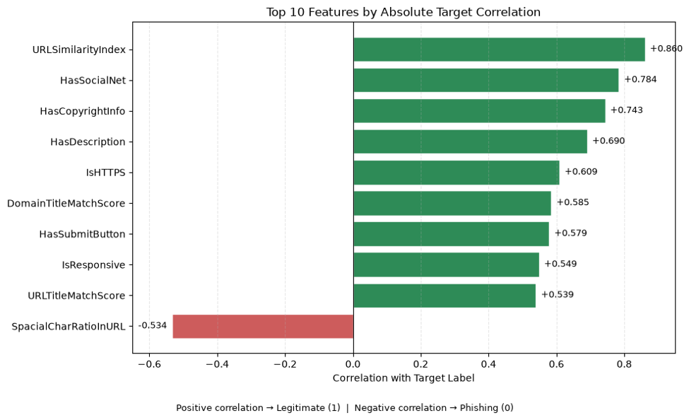
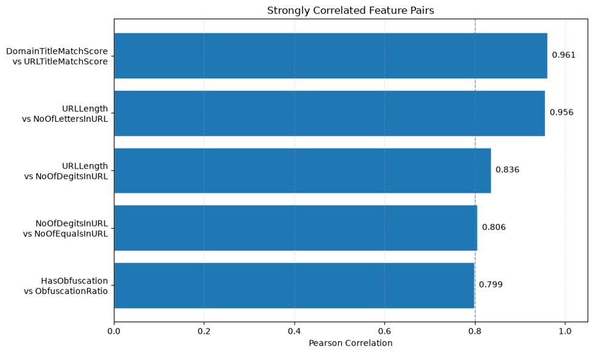

PhiUSIIL
UCI phishing URL dataset.
An empirical study of machine learning methods for identifying phishing websites through URL and webpage characteristics.
Phishing websites are designed to imitate legitimate websites and deceive
visitors into revealing sensitive information, such as passwords and financial details. They may
also expose users to malicious downloads and other security threats.
Detecting these websites before users interact with them is therefore important. In this
project, we explore how machine learning can distinguish phishing URLs from legitimate ones by
analysing different URL and webpage characteristics.
How effectively can different machine learning models distinguish phishing URLs from legitimate URLs, and how does the information available to each model affect its performance?
↗We have identified that how important it is to detect phishing URLs and established what we aim to solve. But before building a solution, we need to understand the data that will drive it. So let's go to the next Episode where we will take the first step towards solution!
A dataset is more than a collection of rows. We need to understand what each observation represents, what its features mean, and where its limitations lie.
UCI phishing URL dataset.
Rows after exact URL deduplication in the current working dataset.
Numeric features describing URL and webpage characteristics.
Source:
Prasad, A. & Chandra, S. (2024). PhiUSIIL Phishing URL (Website) [Dataset]. UCI Machine Learning
Repository. https://doi.org/10.1016/j.cose.2023.103545.
Our dataset contains two classes: legitimate URLs and phishing URLs. Understanding their distribution helps us assess the class balance before training our models.
57.29% of observations
42.71% of observations
Before training our models, we examined the dataset for missing values, duplicate URLs, and the structure of its input features. These checks help establish a consistent foundation for our experiments.
No missing values detected across the dataset.
Exact URL duplicates removed before model training.
Numeric input features used to construct our feature sets.
The original dataset contained 235,795 observations. Although FILENAME served as a record identifier, different filenames could correspond to the same URL. Deduplicating by filename alone would therefore not reliably identify repeated URLs.
If duplicate URLs unluckily came in both the training and test sets, the model could encounter an identical URL during training and evaluation. This could lead to data leakage and an overly optimistic estimate of its ability to generalize to unseen URLs.
We therefore removed duplicate entries using the URL column, retaining 235,370 observations. This ensures that exact duplicate URLs do not appear across our dataset splits.
The dataset contains 56 columns: 50 numeric features, five string-valued columns, and one target label. The label identifies legitimate URLs (1) and phishing URLs (0).
Our experiments use explicitly defined numeric feature sets. FILENAME, URL, Domain, TLD, and Title are excluded from these model inputs. The URL column is retained for deduplication, while the label is used as the prediction target rather than as an input feature.
The five string-valued columns are excluded from our model inputs because this study focuses on explicitly defined numeric feature sets rather than directly processing raw strings.
Several numeric features capture specific properties derived from the URL and webpage, such as URL length, character composition, and HTTPS usage. We use these engineered features to investigate how different combinations of information affect classification performance. Although the numeric features capture selected properties of the original strings, they may not preserve all their information. Exploring models that process raw URL strings directly is therefore a possible direction for future work.
The PhiUSIIL dataset contains 50 numeric input features describing different properties associated with URLs and webpages. These features provide different kinds of information that a machine learning model can use to distinguish phishing URLs from legitimate ones.
Exploring these features will help us understand what information is available to the models and motivates our experiments with different feature sets. Let's see the different groups of features we classified:
URL length, domain structure, subdomains, and domain-related characteristics. Some of them are:
The number, proportion, and distribution of different characters in a URL. Some of them are:
Indicators and measurements associated with URL obfuscation.Some of them are:
Includes calculated scores that describe URL-related patterns or similarity. Some of them are:
Captures selected properties of the webpage associated with a URL. Some of them are:
Characteristics of webpage content and its resources. Some of them are:
During exploratory data analysis, this feature showed a striking difference between the two classes in the original dataset.
All 134,850 legitimate observations had a score of 100.
Scores varied substantially, with a standard deviation of 22.57.
Statistics shown above are from the original dataset before URL deduplication (235,795 observations).
The feature has a strong association with the target label in this dataset. However, some phishing observations also have a score of 100, so the score alone does not perfectly separate the two classes. Its contribution to classification performance will be investigated through our feature-set experiments.
One concern with URLSimilarityIndex is how its calculation and the dataset construction may influence the relationship between this feature and the target label. In our dataset, every legitimate observation has a score of 100, while phishing observations have varying scores. This raises the question of whether the feature provides information that could make classification unusually easy. A model might learn to associate a score of 100 with the legitimate class, potentially exploiting a dataset-specific pattern rather than learning more general characteristics of phishing URLs.
However, this pattern alone does not establish data leakage. We will investigate the feature's construction and evaluate its contribution to model performance in our experiments.
These features provide different kinds of information, but not every experiment needs to use all of them. We therefore define five feature sets, M1–M5, to investigate how model performance changes as the available inputs change.
The dataset provides 50 numeric input features, but not every feature necessarily contributes equally to phishing detection. Some features we might know in present like URL Features but some we may know only after scraping the webpage like Page Content and Resources. To investigate the effect of feature selection, we define five feature sets, ranging from a small collection of URL-based features to the complete set of numeric inputs.
Each set is designed to answer a different question about the information available to a phishing detection model.
Uses URL structure, character composition and obfuscation indicators.
Extends M1 with three additional statistical features: TLDLegitimateProb, URLCharProb and CharContinuationRate.
Extends M2 with IsHTTPS, adding information about whether the URL uses HTTPS.
Adds the remaining numeric features, excluding URLSimilarityIndex.
Uses every numeric input feature, including URLSimilarityIndex.
M1 to M4 progressively introduces additional groups of features. M5 differs from M4 by including URLSimilarityIndex.
Earlier exploration showed a strong relationship between URLSimilarityIndex and the target label: every legitimate observation in the original dataset has a score of 100, while phishing observations have varying scores.
Keeping this feature out of M4 allows us to compare results without it against results with it in M5. A large performance difference would be worth investigating, particularly to understand the feature's construction and whether the observed relationship generalizes beyond this dataset.
A strong relationship with the label does not, on its own, establish data leakage.
Exploratory data analysis revealed several patterns that distinguish phishing and legitimate observations. These findings help us understand the dataset and motivate the feature sets used in our experiments.
Feature–Target Relationship
All 638 observations with IsDomainIP = 1 belong to the phishing class in this dataset. However, most phishing observations do not use IP-based domains.

IP-based domains are a distinctive signal in this dataset, but their absence does not rule out phishing.
Feature–Target Relationship
Every observation with detected URL obfuscation belongs to the phishing class in this dataset. However, only a small fraction of phishing observations exhibit this property.

Detected obfuscation is a distinctive pattern in this dataset, but it is not present in every phishing URL.
Feature–Target Relationship
The URLSimilarityIndex (USI) stands out as the feature most strongly correlated with the target label in this dataset. Every legitimate URL has a USI score of 100, while phishing URLs exhibit a much wider range of scores.

USI has a striking association with the target label. Its unusually strong relationship warrants further investigation into how the feature is constructed.
Website Security
All legitimate URLs in this dataset use HTTPS. However, approximately 49.2% of phishing URLs also use HTTPS, showing that encrypted connections are not exclusive to legitimate websites.

HTTPS protects data exchanged with a website, but it does not guarantee that the website itself is trustworthy. These results describe this dataset and should not be generalized to all websites.
Statistical Association
The input features show varying degrees of correlation with the target label. URLSimilarityIndex has the strongest absolute correlation among the listed features.

Features differ substantially in their statistical association with the target. Correlation alone does not establish feature importance or guarantee generalization.
Feature Relationships
Several numerical features exhibit strong positive correlations. For example, URLLength and NoOfLettersInURL have a correlation of approximately 0.956, while DomainTitleMatchScore and URLTitleMatchScore have a correlation of approximately 0.961. Such relationships suggest that some features may capture overlapping information.

Strongly correlated features may provide overlapping information. Comparing our M1–M5 feature sets helps us investigate whether adding more features improves predictive performance.
These observations motivate further experiments, but they do not establish how well a feature will perform on unseen data. We investigate this through controlled comparisons of different feature sets and model evaluations.
We have investigated the dataset, explored its distributions, and uncovered patterns within the features. Now, it is time to prepare the data for machine learning.
We document each transformation so that the evaluation can be understood and reproduced.
Understand columns, labels and data quality.
Remove repeated URLs using exact URL matches.
Create stratified training/validation and test sets.
Apply model-appropriate preprocessing within pipelines.
Before splitting the dataset, we removed repeated URLs to ensure that the same URL would not appear multiple times in our experiments. Deduplication was performed using exact URL matches, retaining the first occurrence of each URL.
Repeated URLs can make evaluation less reliable if copies appear across different dataset splits. Removing duplicates before splitting reduces this risk and provides a cleaner basis for model comparison.
After cleaning the dataset, we separated the predictive features from the target variable. From the original 56 columns, we retained 50 numeric features as model inputs and kept the label column separately as the prediction target. The five raw string columns were excluded from our initial numeric experiments.
Input features (X)
Target (y)
Excluded strings
Numeric characteristics describing URLs and websites. These features are provided to the model to identify patterns associated with phishing and legitimate websites.
These columns were not used directly as inputs in our initial numeric experiments.
FILENAME
Dataset-related identifier
URL
Retained for deduplication, excluded from model inputs
Domain
Raw domain string
TLD
Raw top-level domain string
Title
Raw webpage title
Keeping the target variable separate ensures that the model learns from the input features rather than receiving the answer during training. This establishes a clear distinction between the information used for prediction and the value the model is expected to predict. Including the label among the input features would introduce direct target leakage, allowing the model to access the very answer it is supposed to predict. Therefore, we keep the 50 input features and target variable separate.
After separating the input features and target variable, we divided the cleaned dataset
into
training, validation and test subsets using an 80:10:10 ratio. The splitting was
performed
in two stages. First, we divided the dataset into two parts using a 90:10 ratio,
reserving
10% of the data for testing. The remaining 90% was then divided into training and
validation
sets in an 8:1 ratio. This resulted in 80% of the data being allocated for training,
while
10% each was allocated for validation and testing. We used stratified sampling with
random_state=42 to preserve class proportions and ensure reproducibility.
Stratification is a sampling technique that maintains approximately the same class proportions across different subsets of a dataset. In our case, each subset retains approximately 57.29% legitimate URLs and 42.71% phishing URLs, reflecting the distribution of the original dataset.
Without stratification, random splitting could result in
subsets with significantly different class distributions.
This could affect the patterns learned during training
and make model evaluation less representative of the
original dataset. Preserving class proportions provides
a more consistent basis for training, model selection
and final evaluation.
In simple words, if we didn't perform stratification then it is possible that in
training set, we got a distribution where almost all of labels are of one class
while
testing set has labels of other class. This could lead to very bad model as the
model
will have to learn representative patterns and could result in unreliable
evaluation.
Hence, we use stratification to ensure that all subsets maintain approximately the
same
class distribution as the original dataset.
The test set remains untouched during model training, selection and hyperparameter tuning. It is reserved exclusively for the final evaluation of the selected model.
Although we initially identified 50 numeric features as potential model inputs, using
all of
them in every experiment would not necessarily help us understand their individual
contributions.
As we also observed in the Dataset section, certain features, such as
URLSimilarityIndex,
appeared to almost perfectly identify legitimate URLs using a particular value. Relying
entirely on all 50 features could therefore make it difficult to determine whether the
model
is actually learning meaningful phishing patterns or simply exploiting shortcuts present
in
the dataset.
And even the bigger story (and the main reason) of this split was initially we
experimented
with the available numeric features (all) but soon encountered something unexpected:
even a
basic Logistic Regression model was achieving 100% validation accuracy. While this
initially
seemed promising, it also raised concerns about potential data leakage or the presence
of
features that might allow the model to exploit shortcuts rather than learn meaningful
phishing patterns.
This motivated us to investigate the contribution of different feature groups instead of
relying entirely on the complete feature pool. Additionally, some features require
accessing
the webpage itself and may not be available when we only have the URL.
So considering all this, we constructed five different feature sets, M1 to M5, to
investigate how different
feature combinations influence phishing detection performance. M1–M3 represent features
that
can be obtained by examining the URL alone, whereas M4–M5 include page-dependent
features
that may become available after accessing the website.
Investigate how different categories of features contribute to phishing detection.
Examine whether introducing more features leads to improvements in model performance.
Identify whether certain features expose unintended information about the target, allowing the model to achieve high performance without learning meaningful patterns.
Starts with a focused collection of features derived from URL characteristics.
Expands M1 by incorporating three additional derived statistical features.
Extends M2 with the IsHTTPS feature to include information about the website's HTTPS usage.
Expands the feature pool to include page-dependent information while excluding URLSimilarityIndex.
Includes all 50 numeric features, including URLSimilarityIndex.
By evaluating these five feature sets under consistent experimental conditions, we aim to understand how different features and feature combinations influence phishing detection performance. In particular, we want to identify whether certain features contribute to unexpectedly high predictive performance or potentially introduce data leakage, allowing the model to achieve near-perfect results without learning meaningful patterns. This investigation also helps us understand whether a smaller set of readily available URL features can achieve competitive performance compared with more comprehensive feature sets that include page-dependent information.
Our dataset contains numerical features with considerably different ranges. For example, binary feature like isHTTPS, isDomainIP etc. may have values ranging from 0 to 1, while another like USI, URLLength etc. may contain values in the hundreds or thousands.
To address this, we used StandardScaler to standardize the numerical features. This transforms each feature so that it has approximately zero mean and unit standard deviation, preventing differences in numerical scale from disproportionately influencing models that are sensitive to feature magnitudes.
Calculate the mean and standard deviation of each feature using only the training set.
Standardize the training features using the calculated statistics.
Apply the same training-set statistics to the validation and test features.
Where x is the original value, μ is the training-set mean, and σ is the training-set standard deviation.
Since our input features can have different numerical ranges, we incorporated StandardScaler into pipelines for models that benefit from feature standardization. Logistic Regression, Lasso Logistic Regression, Ridge Logistic Regression, and both SVM variants were trained using standardized features. The scaler was fitted on the training data and then applied to the corresponding validation or test data. Tree-based and boosting models were trained directly on the original feature scales, as these models do not require feature standardization.
The scaler is fitted exclusively on the training data. Using validation or test data to calculate scaling statistics would allow information from these datasets to influence preprocessing. Since both datasets must remain unseen during model training, we should not use their own statistics for scaling. Instead, we use the mean and standard deviation learned from the training data to transform the validation and test datasets as well. This ensures that the model is evaluated without information from the held-out datasets influencing the preprocessing process.
Data cleaning, feature separation, stratified splitting, feature construction, and scaling — our preprocessing pipeline is complete. Now, it is time to bring the models into the picture.
Where the Data meets the Model!
Here, we explore
different models that will become the protagonists of our upcoming episodes! We will investigate
how different learning approaches perform on the phishing URL detection task. From linear
decision boundaries to nonlinear models and ensemble methods, each algorithm offers a different
way of identifying patterns in the data.
Provides a simple reference point against which more sophisticated models can be evaluated.
Learn relationships between input features and the target through linear decision functions.
Identify decision boundaries separating phishing and legitimate URLs using linear and nonlinear approaches.
Learn decision rules by recursively splitting the feature space into smaller regions.
Combine multiple sequentially trained learners to build stronger predictive models.
Selecting models was not just about their predictive capabilities. Computational feasibility
also played an important role. If a model is to be deployed to solve real-world problems, we
cannot ignore how long it takes to produce predictions. Both prediction quality and
inference
speed matter in practical applications.
As we experimented with different algorithms, we encountered models whose training costs
made
extensive hyperparameter exploration increasingly expensive. Moreover, their results were
not
particularly promising considering the computational time they required. Consequently, we
decided to exclude such models from our subsequent exhaustive search.
We began with a diverse collection of algorithms, covering linear models, support vector machines, tree-based methods, and boosting approaches (all those mentioned above).
During experimentation, Lasso Logistic Regression and RBF Kernel SVM proved particularly expensive to train. Repeated experiments across different feature sets and hyperparameter configurations made exhaustive exploration computationally demanding.
Computationally expensive during repeated training.
High training cost across repeated configurations.
The remaining models were selected for systematic hyperparameter exploration across the constructed feature sets. This allowed us to investigate how different configurations influenced their predictive performance while keeping computational costs manageable.
Choosing an algorithm is just the beginning. Each model comes with its own set of
hyperparameters that influence how it learns from the data. Different configurations can
lead to
significantly different results. Some configurations may improve a model considerably, while
others may actually hurt its performance. Hence, selecting an appropriate hyperparameter
configuration is essential for developing a reliable model.
Therefore, instead of relying solely on default settings, we systematically explored
different
hyperparameter combinations to investigate their impact on predictive performance. Let's
take a
look at the hyperparameters we selected for each model.
A model hyperparameter is a configuration value specified before the model begins training.
Unlike model parameters, which are learned by fitting the model to the training data,
hyperparameters cannot be directly learned through this fitting process. Instead, they
control
aspects of the learning process itself, such as model complexity, regularization, and
learning
behaviour.
For example, Logistic Regression uses regularization hyperparameters to control model
complexity
and reduce the risk of overfitting. Without appropriate regularization, a model may fit the
training data too closely instead of learning patterns that generalize well to unseen data.
Each model selected for hyperparameter exploration was evaluated using a predefined set of candidate values. These configurations formed the search spaces used in our experiments, allowing us to investigate how different parameter settings influenced predictive performance.
Regularization and model complexity
C
7 VALUES
Controls the strength of L2 regularization, penalizing large coefficients to discourage overly complex models.
Our standard Logistic Regression baseline uses no
regularization (penalty=None). Since we
chose not to tune additional hyperparameters for this
model, we evaluated it using this configuration across
all five feature sets instead of performing a
hyperparameter search.
Margin and regularization control
C
7 VALUES
Controls the trade-off between maximizing the classification margin and penalizing classification errors.
Tree structure and ensemble complexity
max_depth
5 VALUES
Restricts the maximum depth of the tree, controlling how complex its decision structure can become.
min_samples_leaf
6 VALUES
Specifies the minimum number of samples required in a leaf node. Larger values encourage simpler trees.
criterion
2 VALUES
Determines the measure used to evaluate the quality of a split.
n_estimators
2 VALUES
Determines the number of decision trees used in the forest.
max_depth
3 VALUES
Limits the maximum depth of each individual decision tree.
min_samples_leaf
3 VALUES
Controls the minimum number of samples allowed in each leaf node.
Learning rate and ensemble configuration
n_estimators
3 VALUES
Number of boosting stages.
learning_rate
3 VALUES
Controls the contribution of each boosting stage to the overall model.
max_depth
3 VALUES
Controls the depth of the individual regression trees used as weak learners.
n_estimators
3 VALUES
Determines the maximum number of weak learners used in the ensemble.
learning_rate
3 VALUES
Controls the contribution of each weak learner to the final ensemble.
n_estimators
3 VALUES
Number of boosting rounds.
learning_rate
3 VALUES
Controls the contribution of each new tree to the overall model.
max_depth
3 VALUES
Controls the maximum depth of each individual tree.
Exploring individual hyperparameters was only one part of the process. We combined their candidate values to construct configurations for each model. These configurations were then evaluated across all five feature sets, allowing us to investigate how both model settings and feature selection influenced predictive performance.
Running multiple models across different feature sets and hyperparameter configurations can quickly become difficult to manage. As we saw in the previous subsection, our Decision Tree experiments alone involved 300 configurations! So to keep our experiments reproducible and their results easy to compare, we developed a systematic experiment-tracking workflow.
Each experiment represents a particular combination of a model, its hyperparameter configuration, and a feature set. The model is trained using the training split and evaluated on the validation split.
For models undergoing hyperparameter exploration, we systematically evaluated the selected configurations across the corresponding feature sets. Each configuration was treated as an independent experiment, allowing us to compare how changes in model parameters and input features influenced performance.
Rather than manually recording the outcome of every experiment, we implemented an automated result-recording mechanism.
After each run, the system stores the experiment configuration, evaluation metrics, training time, and convergence information. Confusion matrices are also recorded separately and linked to their corresponding experiments through unique experiment identifiers.
After completing hyperparameter exploration using the training and validation splits, we proceeded to evaluate the selected model configurations on a separate held-out test set. Each configuration was recreated using its corresponding hyperparameters and refitted on the combined training and validation datasets, comprising 90% of the original data. The remaining 10% was kept untouched until this final evaluation.
Across all nine models and five feature sets, this resulted in 45 final test evaluations. For each evaluation, we recorded the performance metrics, training time, convergence status, and confusion matrix, providing a consistent basis for examining model behaviour on unseen data.
Accuracy is an essential measure of model performance. After all, a model needs to demonstrate reasonable predictive capability before we can consider it useful. However, high accuracy alone does not tell the complete story, especially in a phishing detection task. We wanted to understand not just how often our models were correct, but also the kinds of mistakes they made. This led us to the following metrics: some intuitive, others more analytical.
Overall proportion of correctly classified URLs.
Average recall across both classes.
Proportion of actual phishing URLs correctly identified.
Phishing URLs incorrectly classified as legitimate.
Legitimate URLs incorrectly classified as phishing.
Time required to train a particular experiment.
Whether model training completed without convergence warnings.
All recorded experiments are organized into separate directories based on their respective model groups. Each directory contains the recorded experiment results and their associated confusion matrices.
This organization allows us to retrieve results for individual configurations, compare experiments across feature sets, and use the recorded data as the foundation for our interactive evaluation dashboard.
After conducting hundreds of experiments, we had accumulated a substantial collection of configurations, evaluation metrics, and confusion matrices. But we wanted to do more than simply store these results.
We wanted to make the entire experiment archive explorable. This led us to the idea of building an interactive evaluation mechanism through which users could investigate different models, feature sets, and hyperparameter configurations without having to manually navigate through individual experiment records.
Instead of displaying only the best-performing configuration for each model, we wanted to preserve all recorded experiments. This would allow users to explore how different configurations behave and understand the effect of changing model parameters and input features.
By retaining every recorded configuration, we can investigate much more than just which experiment achieved the highest accuracy.
Understand how changing model parameters influences predictive performance.
Investigate whether adding different groups of features improves model performance.
Compare different algorithms using consistent evaluation metrics.
Examine confusion matrices to understand the classification mistakes made by each experiment.
The recorded experiment data becomes the foundation of our interactive evaluation dashboard. Users can navigate through previously executed experiments, compare their performance metrics, and inspect individual confusion matrices.
What started as a collection of individual experiments eventually became an interactive research interface, allowing us to explore the behaviour of our models through the evidence accumulated during experimentation.
We have established our experimental framework. Now, it is time to see what the experiments actually reveal.
After exploring different algorithms, feature representations, and hyperparameter configurations, it's time to put our experiments to the test. This episode brings together the validation findings and final held-out test results to reveal how well our models distinguish phishing URLs from legitimate ones, where they excel, and where they fall short.
Explore all model families, compare configurations, and evaluate performance across feature sets.
A consolidated view of model performance across feature sets.
We have evaluated our models and compared their performance across different feature sets. But the numbers only tell part of the story. Now, it is time to look deeper into what our models learn and where they go wrong.
A model's mistakes can reveal more than its headline score. We investigate how different learning algorithms behave, where they struggle, and how feature engineering changes their ability to distinguish phishing from legitimate URLs.
Two models can achieve almost identical accuracy while making different mistakes. By examining their false positives and false negatives, we can understand how effectively each model distinguishes phishing URLs from legitimate ones.
Nine learning approaches. Nine different ways of making mistakes! Time to Analyze!
We will focus exclusively on M3 (URL Features), as it most closely resembles our intended URL-based phishing detection scenario. M3 includes all those features that in reality we have before clicking the URL and hence its the best feature set resembling reality. We will do all our analysis of Models keeping the Model M3 as the fixed parameter. In addition, we will use test results we got to show their details as test results are the best way to know how a model is doing.
The Majority Classifier provides our simplest reference point. It predicts every URL as belonging to the legitimate class (as that's the majority class), regardless of its actual characteristics.
Every prediction falls into the legitimate class. The classifier fails to identify even a single phishing URL.
| ACTUAL ↓ / PREDICTED → | PHISHING | LEGITIMATE |
|---|---|---|
| PHISHING | 0 | 10,052 |
| LEGITIMATE | 0 | 13,485 |
The classifier achieves 57.29% accuracy simply by predicting the majority class. However, this comes at the cost of completely ignoring phishing URLs. Its zero false alarms are not evidence of effective detection; they are a direct consequence of never predicting phishing in the first place. This shows that even a naive model can get accuracy of 57% just by predicting one class and hence, we expect all our models to do better than this!
Logistic Regression performs consistently well across all five feature sets, achieving accuracy above 99% in every experiment. This indicates that even a relatively simple linear classification model can distinguish phishing URLs from legitimate URLs effectively in our dataset.
Logistic Regression correctly identifies 9,989 out of 10,052 phishing URLs, while producing only 7 false alarms. However, 63 phishing URLs still go undetected.
| ACTUAL ↓ / PREDICTED → | PHISHING | LEGITIMATE |
|---|---|---|
| PHISHING | 9,989 | 63 |
| LEGITIMATE | 7 | 13,478 |
Logistic Regression achieves consistently strong performance across
all five feature sets. However, on M1, M2 and M3, its phishing recall
remains around 99.4%, meaning it still misses approximately 50–60
phishing URLs. Although this is a very small proportion of the total
phishing URLs, these missed detections remain important in a phishing
detection system.
Clearly, we can see it performed lot better than the Majority classifier and
being the basic linear model, such performance is appreciable but this also
suggests that the dataset might be easier to predict.
Ridge Logistic Regression introduces L2 regularisation by penalising large coefficient values. This encourages a more constrained model while retaining the same underlying classification approach. Its performance though remained very similar to standard Logistic Regression.
Ridge Logistic Regression correctly identified 9,989 out of 10,052 phishing URLs and produced just 6 false alarm (one smaller than logistic regression). However, it missed 63 phishing URLs, same as standard Logistic Regression.
| ACTUAL ↓ / PREDICTED → | PHISHING | LEGITIMATE |
|---|---|---|
| PHISHING | 9,989 | 63 |
| LEGITIMATE | 6 | 13,479 |
Ridge Logistic Regression performs almost identically to standard Logistic Regression. One thing we can see from the validation results that Ridge Logistic Regression got slightly higher accuracy than Logistic Regression by improving the False alarms. If we see Recall, both had almost similar with a slight difference of 1 or 2. In short, both models actually made similar errors overall, indicating that regularisation, here didn't provide a meaningful improvement in classification performance.
Linear Support Vector Machine (SVM) attempts to find an optimal decision boundary that separates phishing URLs from legitimate URLs by maximising the margin between the two classes. It achieved performance comparable to Logistic Regression and Ridge Logistic Regression, with a slightly different distribution of classification errors.
Linear SVM correctly identifies 9,988 out of 10,052 phishing URLs and produces zero false alarms. However, 64 phishing URLs still go undetected.
| ACTUAL ↓ / PREDICTED → | PHISHING | LEGITIMATE |
|---|---|---|
| PHISHING | 9,988 | 64 |
| LEGITIMATE | 0 | 13,485 |
Linear SVM achieves marginally better overall accuracy than
Logistic Regression and Ridge Logistic Regression. Its most
notable characteristic is that it produces zero false alarms,
resulting in a phishing precision of 100%. However, this comes
with 64 missed phishing URLs, one more than the other two
models. Its phishing recall therefore remains almost identical
to theirs.
While eliminating false alarms is a positive outcome, it does
not represent a substantial improvement in phishing detection.
Overall, Linear SVM demonstrates performance comparable to
the two Logistic Regression variants, with a slightly
different balance between missed phishing URLs and false alarms.
Decision Tree classifies URLs by recursively splitting the data based on feature values, creating a series of decision rules. Unlike the previous linear models, it can capture non-linear relationships between features. However, when evaluated on M3, its performance is slightly weaker than that of the previously discussed linear models, particularly in terms of false alarms.
Decision Tree correctly identifies 9,987 out of 10,052 phishing URLs. However, it also flags 27 legitimate URLs as phishing, while missing 65 phishing URLs.
| ACTUAL ↓ / PREDICTED → | PHISHING | LEGITIMATE |
|---|---|---|
| PHISHING | 9,987 | 65 |
| LEGITIMATE | 27 | 13,458 |
Decision Tree achieves a strong phishing recall of 99.35%, but its overall performance is weaker than that of the previously evaluated linear models. It misses 65 phishing URLs and produces 27 false alarms. In comparison, Logistic Regression misses 63 phishing URLs with 7 false alarms, Ridge Logistic Regression misses 63 with 6 false alarms, and Linear SVM misses 64 with none. Decision Tree therefore does not offer an improved phishing detection rate in exchange for its additional false alarms. Instead, it makes slightly more classification errors in both categories compared with these linear models.
An interesting question is why Decision Tree performs relatively worse than the previous models despite its ability to capture non-linear relationships. Looking at its performance across feature sets in our interactive explorer, we can see that it performed extremely well on M1, achieving 99.70% accuracy and 99.44% phishing recall. However, after three additional features were introduced in M2, its performance dropped to 99.13% accuracy, with 99.12% recall and 98.85% precision. This suggests that the additional features may have influenced the tree's splitting decisions unfavourably.
Interestingly, M3 retains those additional features but also introduces IsHTTPS. In our dataset, every legitimate URL has IsHTTPS = 1, making it a strong signal associated with the legitimate class. This may have contributed to the Decision Tree's recovery, with its accuracy improving from 99.13% on M2 to 99.61% on M3. Nevertheless, its performance remains below that on M1.
These explanations are hypotheses rather than confirmed causes. Since the best configurations are selected separately for each feature set, changes in hyperparameters may also contribute to the observed differences. Investigating the learned decision rules, feature importance and individual feature contributions would be necessary to establish why the additional features affected Decision Tree's performance in this way.
Random Forest is an ensemble learning algorithm that combines predictions from multiple decision trees. Each tree is trained using a different sample of the training data and considers randomly selected subsets of features while making splits. By combining the predictions of multiple trees, Random Forest aims to produce more robust classifications than an individual decision tree.
The model misses 58 phishing URLs while incorrectly flagging 21 legitimate URLs as phishing.
| Actual / Predicted | Phishing (0) | Legitimate (1) |
|---|---|---|
| Phishing (0) | 9,994 | 58 |
| Legitimate (1) | 21 | 13,464 |
Random Forest achieved strong classification performance, with a phishing recall of 99.42%, the highest among the models evaluated so far for M3 on test results. It successfully identified 9,994 out of 10,052 phishing URLs, missing only 58. However, it produces 21 false alarms, more than the previously evaluated linear models. This suggests that Random Forest is slightly more inclined to flag URLs as potentially malicious, catching more phishing URLs at the cost of additional false alarms.
Compared to the individual Decision Tree, Random Forest improved both phishing detection and false alarm performance. It missed 7 fewer phishing URLs and produced 6 fewer false alarms, resulting in a higher overall accuracy of 99.66%. This demonstrates the benefit of combining multiple decision trees rather than relying on a single tree.
Nevertheless, Random Forest does not surpass the previously evaluated linear models in overall accuracy. An interesting possibility is that the dataset contains relatively straightforward patterns that simpler linear models can capture effectively, without requiring the additional flexibility of nonlinear models. This remains a hypothesis rather than a confirmed explanation.
Gradient Boosting is an ensemble learning algorithm that builds decision trees sequentially. Instead of training independent trees, each successive tree attempts to correct the errors made by the existing ensemble. By gradually improving its predictions, the algorithm aims to build a strong classifier from multiple relatively weak learners.
The model misses 57 phishing URLs while incorrectly flagging 24 legitimate URLs as phishing.
| Actual / Predicted | Phishing (0) | Legitimate (1) |
|---|---|---|
| Phishing (0) | 9,995 | 57 |
| Legitimate (1) | 24 | 13,461 |
Gradient Boosting achieved strong classification performance (similar to Random Forests), with 99.66% test accuracy and 99.43% phishing recall. It successfully identified 9,995 out of 10,052 phishing URLs, missing only 57. However, it produced 24 false alarms, which is higher than the previously evaluated linear models. Compared to Random Forest, Gradient Boosting detects one additional phishing URL but generates three additional false alarms, resulting in almost identical overall accuracy. So we can say Random Forests and Gradient Boosting had similar results and patterns and hence similar analysis.
And as we saw in previous Non Linear Models, we can see same thing here. Its performance is strongest on M1, achieving 99.74% accuracy with only 9 false alarms. Introducing the additional M2 features reduces its accuracy to 99.65% (though slight reduction as compared to Decision Trees) and increases false alarms to 25. M3 produces almost identical results to M2.
A similar decline on M2 was observed with Decision Tree and Random Forest. This suggests that the additional features may be introducing information that is not particularly beneficial to tree-based models, potentially influencing their learning process unfavourably. However, again stating that these explanations remain hypotheses and would require further investigation to establish the actual cause.
AdaBoost (Adaptive Boosting) is an ensemble learning algorithm that combines multiple weak learners to create a stronger classifier. It trains these learners sequentially, increasing the importance of samples that were incorrectly classified by previous learners. This allows subsequent learners to focus more on difficult samples and gradually improve the overall classification performance. And of all the models we saw, it's the AdaBoost that gave shocking results! Let's see why :-
The model misses 139 phishing URLs while incorrectly flagging 93 legitimate URLs as phishing.
| Actual / Predicted | Phishing (0) | Legitimate (1) |
|---|---|---|
| Phishing (0) | 9,913 | 139 |
| Legitimate (1) | 93 | 13,392 |
AdaBoost achieved 99.01% test accuracy on M3, correctly identifying 9,913 out of 10,052 phishing URLs. Although this is still a strong result, it is noticeably below the performance of the previously evaluated models. It missed 139 phishing URLs and produced 93 false alarms, indicating a decline in both phishing detection and overall classification performance. However, this is not what makes its results shocking, as we had already observed relatively weaker performance in some of the other non-linear models.
What makes AdaBoost particularly interesting is its behaviour across different feature sets, which is quite different from the other non-linear models we have seen. On M1, it achieved only 84.97% accuracy, with a phishing recall of 71.51%. M2 shows a slight improvement to 87.01% accuracy and 74.24% recall, but its performance remains considerably below that of the other models. However, introducing M3 leads to a dramatic recovery, improving accuracy to 99.01% and phishing recall to 98.62%. That is an increase of approximately 12 percentage points in accuracy and 24.38 percentage points in phishing recall. A HUGE JUMP!
One possible explanation for AdaBoost's poor performance on M1 and M2 lies in its sequential learning mechanism. AdaBoost increases the weights of samples misclassified by earlier learners, encouraging subsequent learners to focus more on these difficult samples. However, if the available features do not provide enough information to distinguish these samples effectively, subsequent learners may also struggle to correct the earlier mistakes. Consequently, repeatedly increasing the importance of such samples may not lead to meaningful improvements in classification. This could be the reason why AdaBoost struggled to achieve good phishing recall on M1 and M2.
An interesting possible explanation for the dramatic improvement on M3 is the introduction of isHTTPS. During exploratory data analysis, we observed that every legitimate URL in our dataset uses HTTPS, making this feature a particularly strong signal for identifying legitimate URLs. Since it is an inherent URL characteristic available before visiting the destination, it is a valid input for our intended prediction scenario. AdaBoost may be benefiting substantially from this additional signal, allowing it to distinguish the classes much more effectively.
Nevertheless, this relationship is specific to our dataset and should not be interpreted as HTTPS guaranteeing that a website is legitimate. This might be simpilicty of our dataset that declares all legitimate URLs have https protocol but this we should not generalize. But considering it makes a good reason why AdaBoost suddenly started to perform lot better.
Overall, AdaBoost demonstrates an unusually strong sensitivity to the feature representation. Its performance changes dramatically across feature sets, making it one of the most interesting models in our analysis. This also highlights how the choice of features can influence an algorithm's effectiveness, sometimes as much as the choice of the algorithm itself.
XGBoost (Extreme Gradient Boosting) is an advanced boosting algorithm that builds an ensemble of decision trees sequentially, where each new tree attempts to correct the errors made by the existing ensemble. It uses regularisation and optimisation techniques to improve predictive performance while controlling model complexity. On our M3 test set, XGBoost achieves one of the strongest overall performances among the evaluated models.
The matrix shows how XGBoost classified the 23,537 URLs in the held-out test set.
| Actual / Predicted | Phishing (0) | Legitimate (1) |
|---|---|---|
| Phishing (0) | 9,992 | 60 |
| Legitimate (1) | 3 | 13,482 |
XGBoost delivers one of the strongest and most balanced performances among the evaluated models on M3. It achieves 99.73% test accuracy, 99.69% balanced accuracy, 99.40% phishing recall and approximately 99.97% phishing precision. Its particularly low number of false alarms, just 3, is also noteworthy.
However, an interesting comparison emerges when we consider Linear SVM. While XGBoost misses 60 phishing URLs and produces 3 false alarms, Linear SVM misses 64 phishing URLs but produces no false alarms. This means XGBoost makes 63 total classification errors, while Linear SVM makes 64. The difference is just one URL in our test set. Although XGBoost detects four additional phishing URLs, it also incorrectly flags three legitimate URLs. Consequently, we cannot claim that XGBoost is substantially better than Linear SVM based on these test results alone.
Looking at its performance across feature sets, XGBoost also demonstrates remarkable consistency. It achieves 99.74% accuracy on M1, 99.73% on M2 and 99.73% on M3, with phishing recall remaining atleast 99.40% across all three feature sets in our test evaluations. Unlike AdaBoost, whose performance changes dramatically with the feature representation, XGBoost maintains a stable level of performance.
Overall, XGBoost stands out as a strong candidate because of its combination of high phishing detection, exceptionally high precision and very few false alarms. However, the difference between it and Linear SVM is extremely small on the held-out test set. If we eventually develop a live phishing URL prediction system, choosing between these models should also involve comparing prediction speed, computational requirements and performance on independently collected URLs. Our test results alone are not sufficient to establish a definitive deployment winner.
What happens when we give our models more information?
Performance across eight learning algorithms, evaluated on the same held-out test set. Values are reported as mean (median), with the observed minimum–maximum range. Let's see and then analyze how each feature set is contributing to model's performance.
| Feature Set | Accuracy | Balanced Accuracy | Phishing Recall | Phishing Precision |
|---|---|---|---|---|
| M1 – Lexical | 97.8789% (99.7366%) 84.9683–99.7408% | 97.6316% (99.6922%) 83.2550–99.7054% | 95.9361% (99.4131%) 71.5082–99.4727% | 98.8634% (99.9201%) 91.4271–100% |
| M2 – Derived | 98.0324% (99.6899%) 87.0119–99.7366% | 97.8032% (99.6565%) 85.3867–99.6954% | 96.2321% (99.4031%) 74.2439–99.4329% | 99.0052% (99.8403%) 94.0991–100% |
| M3 – URL Features | 99.6017% (99.6835%) 99.0143–99.7323% | 99.5623% (99.6472%) 98.9638–99.6904% | 99.2924% (99.3733%) 98.6172–99.4329% | 99.7740% (99.8601%) 99.0706–100% |
| M4 – Page-aware | 99.9623% (99.9575%) 99.9193–100% | 99.9598% (99.9547%) 99.9156–100% | 99.9428% (99.9353%) 99.8906–100% | 99.9689% (99.9652%) 99.9204–100% |
| M5 – All Numeric | 99.9942% (99.9958%) 99.9830–100% | 99.9932% (99.9950%) 99.9801–100% | 99.9863% (99.9901%) 99.9602–100% | 100% (100%) 100–100% |
Across eight learning models, M1 achieved a mean accuracy of 97.88%, while its median reached 99.74%. This considerable difference indicates that a few weaker model configurations, particularly AdaBoost, lower the overall mean despite most models performing exceptionally well.
The median phishing recall is also around 99.4%, indicating that most models successfully identify a large proportion of phishing URLs. However, the mean recall is lower, at approximately 95.94%, and the observed range extends down to 71.51%. This highlights an important concern: while most models perform well, certain configurations still miss a substantial number of phishing URLs. Since failing to detect even a single phishing URL can have serious consequences, recall remains particularly important when evaluating these models.
Overall, lexical URL characteristics provide a strong starting point for phishing detection. However, the wide performance range, particularly in phishing recall (71.51%–99.47%), indicates that relying exclusively on these characteristics can leave certain models struggling to identify phishing URLs reliably.
Compared to M1, M2 achieves slightly better mean performance, with mean accuracy increasing to 98.03%, up from 97.88%. We can also observe improvements in mean balanced accuracy (97.80%), phishing recall (96.23%) and phishing precision (99.01%). The most noticeable improvement is in mean phishing recall, which increases by approximately 0.30 percentage points.
However, if we compare the maximum observed
performance, M2 actually achieves slightly lower
values than M1 in accuracy, balanced accuracy
and phishing recall. The median accuracy also
decreases slightly from 99.74% to 99.69%, with
similar small decreases in the median values
of the other metrics. This suggests that the
additional features do not improve every model
consistently. Instead, they provide modest gains
in aggregate performance, particularly by
improving the lower end of the performance range.
We also observed in the previous section that
several nonlinear models, excluding AdaBoost
and XGBoost, experienced noticeable performance
drops after these features were introduced.
This suggests that the additional statistical
features may interact differently with different
learning algorithms and do not necessarily
provide useful signals to every model.
Adding derived URL characteristics provides a modest improvement over the lexical baseline, especially in mean phishing recall and the minimum observed performance. However, the changes are relatively small, suggesting that these additional features offer incremental rather than transformative improvements.
The transition from M2 to M3 is accompanied by an increase in mean performance across all four evaluation metrics. Mean accuracy increased from 98.03% to 99.60%, while mean balanced accuracy rose from 97.80% to 99.56%. Mean phishing recall also increased from 96.23% to 99.29%. However, these overall improvements are heavily influenced by the substantial recovery of AdaBoost between the two feature sets. Therefore, the mean improvement should not be interpreted as evidence that adding IsHTTPS uniformly improves every model.
A more important observation is the considerable improvement in the minimum observed performance. Minimum accuracy rose from 87.01% to 99.01%, while minimum phishing recall improved from 74.24% to 98.62%. The performance ranges also became considerably narrower, indicating that the models are now performing much more consistently across different learning algorithms.
This consistency is particularly promising. While M1 and M2 contain configurations that struggle considerably, every M3 configuration achieves accuracy above 99% and phishing recall above 98%. Even though M3 has slightly lower maximum accuracy and balanced accuracy than M1, its minimum performance is substantially higher. This suggests that M3 provides a much more reliable starting point for URL-based phishing detection. Nevertheless, its performance on previously unseen real-world URL distributions would still require independent validation.
The major addition in M3 is the IsHTTPS feature, which indicates whether a URL uses HTTPS (HyperText Transfer Protocol Secure). Interestingly, our dataset contains HTTPS for 100% of legitimate URLs, making this feature strongly associated with the legitimate class in our dataset.
We do not consider the inclusion of this feature to be data leakage in itself. Although it is strongly correlated with the target (correlation coefficient: +0.609), HTTPS is an observable property of a URL that can be extracted without inspecting the destination webpage. Therefore, it is legitimately available to a URL-based detection system. However, its unusually strong relationship with legitimacy in this dataset deserves careful consideration.
Furthermore, 49.2% of phishing URLs in our dataset also use HTTPS. This means that HTTPS alone cannot reliably distinguish legitimate URLs from phishing ones. Our models can instead utilise this feature alongside other URL characteristics rather than relying on it as a definitive indicator of legitimacy.
This relationship must also be interpreted carefully. Phishing websites can use HTTPS, and legitimate websites can still use plain HTTP. The distribution observed in our dataset may therefore reflect dataset-specific characteristics rather than a universal property of URLs. Consequently, the strong association between HTTPS and legitimacy may not hold to the same extent in other real-world environments. Independent validation on URLs from different sources and time periods would help establish how well M3 generalises beyond this dataset.
M3 represents our most complete URL-level feature set. Its most notable contribution is the consistency of performance across different learning algorithms: every model achieves accuracy above 99% and phishing recall above 98%. Although the mean metrics also improve over M2, these gains are heavily influenced by AdaBoost's recovery and should not be attributed entirely to IsHTTPS. M3 demonstrates that effective phishing detection is possible using URL-level information alone, but the dataset-specific relationship between HTTPS and legitimacy makes independent validation essential before making broader generalisation claims.
The transition from M3 to M4 produced another improvement across all four evaluation metrics. Mean accuracy increased from 99.60% to 99.96%, while mean balanced accuracy rose from 99.56% to 99.96%. Phishing recall also improved from 99.29% to 99.94%, indicating that the models are now identifying almost all phishing URLs in the held-out test set.
What makes this result even more impressive is the consistency across learning algorithms. The minimum accuracy is now 99.92%, and even the minimum phishing recall reaches 99.89%. This means that the improvement is not limited to a particular algorithm: all eight learning models are performing exceptionally well with this feature set.
And this is where a strong smell of potential data leakage appears! Whether leakage is actually present, however, is difficult to establish from performance and correlations alone. We need to investigate the features and the dataset construction process before drawing such a conclusion.
To understand this improvement, we can look at the correlation between individual features and the target variable (which we already showed in Episode 2: The Playground). Several of the webpage-dependent features show remarkably strong associations with the target:
These correlations suggest that webpage characteristics provide substantial additional information for distinguishing between legitimate and phishing pages.
For example, features such as DomainTitleMatchScore and URLTitleMatchScore help capture relationships between the webpage's identity and its URL. Similarly, the presence of descriptions, copyright information, social networking references, and other webpage elements provides additional signals that the models can use during classification.
Unlike M1 and M2, where the models had to rely primarily on URL characteristics, M4 gives them access to a much richer representation of the destination webpage. This additional information potentially makes the classification problem considerably easier.
However, strong correlation does not automatically establish causation or indicate data leakage. Although these features are clearly predictive within our dataset, whether any of them are contributing to unintended information leakage remains an open question that requires further investigation.
There is an important difference between M3 and M4 beyond their performance.
M3 can operate using information available directly from the URL, whereas M4 requires fetching and inspecting the destination webpage. This introduces additional requirements, including network requests, HTML parsing, processing time, and handling pages that are unavailable or inaccessible.
Therefore, although M4 achieves considerably better results, it also represents a more resource-intensive detection pipeline. Its performance should be evaluated alongside the additional complexity required to obtain these features.
More importantly, phishing URLs can potentially steal sensitive information as soon as a user visits their destination. Relying on webpage-dependent features therefore introduces a serious limitation for pre-click detection. Even if M4 achieves exceptionally high performance, it may not be the ideal choice for a detector that must evaluate URLs before accessing their destinations. And hence we won't prefer M4 as the feature set in Phishing URL Detection for the real world.
M4 demonstrates the substantial predictive value of webpage-dependent information. With mean accuracy of 99.96% and mean phishing recall of 99.94%, it achieves exceptionally high and consistent performance across all eight learning models. The strong correlations observed for several webpage features provide a possible explanation for this improvement. However, these results come with an important trade-off: accessing webpage information requires a more complex detection pipeline, and independent validation is necessary to establish real-world generalisation.
URLSimilarityIndex. And the surprising thing is that this single
feature pushes our models remarkably close to perfection!
The transition from M4 to M5 produces another improvement across all four evaluation metrics. Mean accuracy increases from 99.96% to 99.99%, while mean balanced accuracy also reaches approximately 99.99%. Phishing recall improves further, reaching an impressive mean of 99.9863%.
But the most remarkable result is the consistency across learning algorithms. Every one of the eight learning models now achieves 100% phishing precision. The minimum accuracy is also 99.983%, meaning that even the weakest-performing model is classifying almost every URL correctly.
M5 has effectively pushed our already exceptional results even closer to perfection. But how can adding just one feature produce such a result? Can a single feature addition push our models towards perfection? And, more importantly, is USI causing data leakage?
To understand M5, we need to investigate its newly introduced
feature: URLSimilarityIndex. In our exploratory
analysis, this feature showed a correlation of
+0.860358 with the target variable,
making it one of the strongest individual predictors
in the entire dataset.
But what does this feature actually measure? We referred to the dataset's research paper to understand how USI works:
According to the dataset's underlying research, the URLSimilarityIndex measures the similarity between a given URL and URLs belonging to legitimate websites. Its reference collection consists of the top 10 million legitimate websites obtained from the Open PageRank Initiative.
The feature compares URL characteristics to identify suspicious similarity patterns. These include techniques commonly used in phishing attacks, such as:
The resulting similarity score ranges from 0 to 100. A score of 100 represents an exact legitimate URL match, while a high score below 100 can indicate a URL that closely resembles a legitimate website.
The original framework even uses this score as an initial filtering mechanism: URLs with a similarity score of at least 80 but below 100 are flagged as phishing, while the remaining URLs proceed to the machine learning classification stage.
In other words, this feature was specifically designed to capture URL similarity patterns that are useful for phishing detection. It already carries substantial information about the distinction between legitimate and suspicious URLs before our models even begin learning.
And this adds another piece to our investigation of why all eight models are achieving nearly perfect results!
During our exploratory data analysis, we noticed something particularly interesting: every legitimate URL in our dataset has a URLSimilarityIndex of exactly 100. Now, as per the documentation the reference URLs for calculating this feature came from: the Open PageRank Initiative's collection of the top 10 million legitimate websites. There is an important connection here. The legitimate URLs in the dataset were also collected using this Open PageRank-based approach. This means that the legitimate examples and the reference collection used by URLSimilarityIndex are closely connected.
Consequently, the feature can identify a very strong distinction in this particular dataset: legitimate URLs consistently receive a score of 100, while phishing URLs can receive lower scores. This provides a possible explanation for why adding just one feature produces such an extraordinary improvement across all eight learning models. The models are not simply learning more complicated relationships between URL characteristics; they are receiving a feature that already separates the two classes extremely well within this dataset.
This also raises an interesting possibility for designing a more efficient real-world detection pipeline. Instead of relying entirely on a machine learning model, we could explore a two-stage approach:
1) Stage 1 — Similarity-based filtering: Use URLSimilarityIndex to identify URLs that closely resemble known legitimate websites and apply the filtering mechanism described in the original framework.
2) Stage 2 — Machine learning classification: Pass the remaining URLs to a machine learning classifier trained using a feature set such as M3.
Such an approach could potentially reduce the computational requirements of the classification stage while retaining the ability to detect suspicious URLs that are not identified by the similarity-based mechanism.
However, this is only a proposed architecture. Its effectiveness would need to be evaluated using independent datasets, particularly to ensure that legitimate websites outside the reference collection are not incorrectly flagged.
This is where things become particularly interesting. The relationship between the legitimate URL collection and the reference data used by URLSimilarityIndex raises a concern about dataset-source dependency.
However, we should be careful about calling this data leakage. The feature is designed to use information from a legitimate URL reference collection, and the available methodology does not establish that the target labels were directly used to calculate the feature.
What we can say is that the feature may exploit characteristics of how this particular dataset was constructed. Consequently, a random train-test split can preserve the same relationship in both training and testing data, allowing models to achieve exceptionally high test performance.
The real question is whether the same performance would hold for legitimate websites outside the reference collection, newly registered domains, and phishing URLs encountered in the wild. Answering that requires independent external validation. Until then, we cannot confidently conclude that the near-perfect results will generalise to real-world scenarios.
M5 gives us the strongest results across all five feature sets. However, its exceptional performance should not automatically make it our best real-world detection system.
First, it inherits the practical limitations of M4: extracting webpage-dependent features requires fetching and inspecting the destination webpage. Second, URLSimilarityIndex depends on an external reference collection, which introduces additional data requirements and potential generalisation issues.
Therefore, while M5 is the strongest performer on our held-out test set, its real-world effectiveness still needs to be established using independent datasets and a carefully designed evaluation pipeline.
M5 achieves the strongest overall performance among all five feature sets, with mean accuracy of 99.9942%, mean phishing recall of 99.9863%, and 100% phishing precision across all eight learning models. The addition of just one feature, URLSimilarityIndex, pushes the results remarkably close to perfection. However, its strong predictive power is closely connected to the reference data used in its calculation and the way legitimate URLs were collected for this dataset. This raises important questions about dataset-source dependency and real-world generalisation. M5 may be the GOD of our benchmark, but its performance deserves careful scrutiny before we crown it the GOD of phishing detection.
What do our models consistently get wrong?
High accuracy does not necessarily mean that every phishing URL is easy to identify. Understanding how many mistakes our models make is important, but examining the nature of those mistakes can reveal patterns that help us understand their limitations and improve future models.
To investigate the remaining errors, we examined the predictions of four M3 models: XGBoost, Ridge Logistic Regression, Linear SVM, and Decision Tree. These models represent four different approaches to classification, allowing us to compare their mistakes across different modelling techniques.
Although the four models had similar numbers of missed phishing URLs, they did not necessarily make the same mistakes. We therefore examined the overlap between their false negative predictions to understand whether certain phishing URLs were consistently difficult for every model.
Across the four models, 89 distinct phishing URLs were missed by at least one model, while 39 were consistently classified as legitimate by all four.
The following table shows the number of phishing URLs that each individual model incorrectly classified as legitimate.
| Model | Missed Phishing URLs |
|---|---|
| XGBoost | 60 |
| Ridge Logistic Regression | 63 |
| Linear SVM | 64 |
| Decision Tree | 65 |
To investigate why some phishing URLs escaped detection, we compared selected URL features across three groups: phishing URLs missed by all four models, phishing URLs correctly detected by all four models, and legitimate URLs.
We used the median value of each feature for comparison. Unlike the mean, the median is less affected by unusually large or small values, making it useful for describing URL characteristics that may vary considerably.
| Feature (Median) | Missed by All | Caught by All | Legitimate |
|---|---|---|---|
| URL Length | 27 | 34 | 26 |
| Number of Subdomains | 1 | 1 | 1 |
| Digits in URL | 0 | 0 | 0 |
| Other Special Characters | 1 | 3 | 1 |
The phishing URLs missed by all four models have median URL lengths and special character counts identical to those of legitimate URLs. In contrast, phishing URLs caught by all four models have a higher median number of other special characters.
This suggests that some consistently missed phishing URLs lack the more unusual lexical patterns that make other phishing URLs easier to identify.
HTTPS is commonly associated with secure websites, but does its presence actually help distinguish phishing URLs from legitimate ones? To investigate this, we compared HTTPS usage across phishing URLs missed by all four models, phishing URLs caught by all four models, and legitimate URLs.
The results reveal an interesting pattern. All 39 phishing URLs missed by all four models used HTTPS. Interestingly, every legitimate URL in our test dataset also uses HTTPS.
This means that, within our dataset, URLs with HTTPS = 0 belong exclusively to the phishing class, whereas URLs with HTTPS = 1 can belong to either class. However, the presence of HTTPS alone cannot distinguish between them.
The 39 consistently missed phishing URLs demonstrate this limitation particularly well. Despite having a secure connection, these websites were still phishing URLs. Therefore, the models must rely on other URL characteristics to identify phishing websites that also use HTTPS.
The following are eight examples of phishing URLs that all four models incorrectly classified as legitimate. Their structures illustrate why lexical URL analysis can struggle with deceptive domains that do not necessarily contain obvious suspicious patterns.
Note: URLs are defanged by replacing "https" with "hxxps" and "." with "[.]" to prevent accidental navigation.
hxxps://www[.]k365v[.]com
hxxps://www[.]amznn[.]net
hxxps://www[.]coinbesaprime-logi[.]com
hxxps://www[.]eventsreg[.]in
hxxps://www[.]tallpullmoby[.]com
hxxps://www[.]serviziofatturazionearuba[.]com
hxxps://www[.]shorttermtradings[.]com
hxxps://www[.]divmainbot[.]pages[.]dev
Several examples contain names resembling familiar brands, financial services, or ordinary website terminology. Such URLs can be difficult to distinguish using lexical characteristics alone, especially when they do not exhibit obvious structural irregularities.
The models also occasionally classified legitimate URLs as phishing. The following examples were among the false positives produced collectively by the four models. These URLs were labelled legitimate in our dataset but were incorrectly flagged as phishing by at least one model.
hxxps://www[.]philippine-embassy[.]org[.]sg
hxxps://www[.]environmentalhistory-au-nz[.]org
hxxps://www[.]association-of-noise-consultants[.]co[.]uk
hxxps://www[.]greenify-me[.]com
hxxps://www[.]driftmasters[.]gp
These examples demonstrate that legitimate domains can also exhibit unusual combinations of words, hyphens, and domain extensions. Such characteristics can sometimes resemble patterns associated with phishing URLs, leading to false positive predictions.
The remaining classification errors reveal an important limitation of URL-only detection. While lexical features successfully identify most phishing URLs, some deceptive domains closely resemble legitimate ones. HTTPS usage also cannot establish trustworthiness on its own.
These findings highlight the potential benefit of combining URL characteristics with additional contextual information, such as webpage content, domain reputation, and website behaviour, to improve phishing detection.
We have examined how our models perform, explored their feature behaviour, and investigated the errors they consistently make. But every model has its boundaries. It is time to understand what our approach cannot yet capture.
Strong results on one dataset do not automatically imply strong performance on new domains, future URLs, or real-world traffic. Real-world traffic is much more complex and difficult to classify. Let's examine the limitations that restrict our detector from being deployed in the outside world.
This is a study of model performance on a particular dataset and evaluation setup—not proof of perfect real-world phishing detection.
One of the most important limitations of our experiments is the relationship between certain features and the target labels in the dataset. Some features exhibit unusually strong associations with the classification outcome, which may encourage models to learn dataset-specific patterns rather than general indicators of phishing activity.
Every legitimate URL in our dataset uses HTTPS. Consequently,
all observations with IsHTTPS = 0 belong to the
phishing class. A model could potentially exploit this
relationship when making predictions.
However, HTTPS only indicates an encrypted connection. Legitimate websites can still operate over HTTP, while phishing websites can also use HTTPS. A legitimate HTTP website would likely be classified as phishing by a model that relies heavily on this feature. Therefore, the relationship observed in our dataset does not necessarily hold in real-world environments.
Strong feature–label relationships in the dataset may not represent reliable relationships in the real world.
Our experiments showed that M4 (Page-aware) and M5 (All Numeric) generally achieved the strongest predictive performance. However, these feature sets rely on information that may require inspecting or accessing the webpage itself.
This creates a practical challenge for our intended use case: detecting potentially malicious URLs before a user visits them. Information about webpage content and behaviour may not be available at the time of the initial prediction.
Uses information obtainable directly from the URL, making it more suitable for detection before visiting the webpage.
Achieve stronger experimental performance but depend on additional webpage-level information that may not be immediately available.
Consequently, M3 provides a more practical representation of our intended URL-only detection scenario, although its predictive performance is slightly lower than that of M4 and M5.
The feature set with the strongest experimental performance is not necessarily the most practical choice for real-world URL-based detection.
Our exploratory data analysis revealed several features with particularly distinctive distributions across phishing and legitimate URLs. While these patterns are useful for classification within the dataset, they may make the classification task considerably easier than real-world phishing detection.
IsDomainIP = 1
belong to the phishing class.
In reality, phishing attackers are not restricted to these obvious patterns. They can use convincing domain names, HTTPS certificates, legitimate hosting infrastructure, and URL structures that closely resemble genuine websites.
A detection system that relies heavily on distinctive indicators may therefore struggle when these signals are absent or deliberately avoided by more sophisticated attackers.
The distinctive patterns present in our dataset may not adequately represent the diversity and sophistication of real-world phishing attacks.
Our evaluation relies on a random train-validation-test split. Although this provides a held-out test set, it does not guarantee that URLs belonging to the same domain or hosting provider are separated across the different subsets.
For example, multiple URLs hosted on the same free hosting platform could appear in both training and test data. This may allow models to benefit from patterns associated with domains or hosting providers already represented during training, potentially overestimating performance on entirely unseen domains.
A single random split does not establish reliable generalization to unseen domains or quantify the uncertainty in our reported performance.
The composition of the dataset itself introduces limitations. Its legitimate URLs exhibit unusually uniform structural characteristics compared with the diversity expected in real-world web traffic.
URLCharProb,
TLDLegitimateProb and
URLSimilarityIndex depend on reference
information associated with legitimate websites.
We identified this dependency for URLSimilarityIndex.
Possible overlap between the reference information
and other dataset records has not been independently
verified.
These characteristics may make the dataset less representative of the variety of legitimate and malicious URLs encountered in actual web traffic.
Dataset composition, collection time, feature provenance and unverified labels can all influence the patterns learned and the conclusions drawn from evaluation.
Although we experimented with multiple machine learning algorithms and feature sets, our model exploration was not exhaustive. Some algorithms received less extensive hyperparameter tuning than others.
The results reflect the algorithms and feature representations explored in this project, rather than the full range of approaches available for phishing URL detection.
Till this point, we have come a long way! Starting from scratch, we explored the dataset, analysed its characteristics, and prepared it through preprocessing. We then introduced different feature sets, experimented with multiple models, trained them, and evaluated their performance. After examining the results, we went deeper into error analysis and understood the limitations of our approach in real-world scenarios. And after everything we have explored, the time has finally come to conclude our project! Let's move on to the final episode!
From exploring raw data to evaluating trained models, our journey
has been about understanding how machine learning can help identify
phishing URLs, what makes detection effective, and where its
limitations begin.
After such a long journey, the time has finally come to bring it to
an end. But this ending will pave the way for a new beginning!
Our objective was to investigate how effectively different machine learning algorithms and feature representations can distinguish phishing URLs from legitimate ones. More importantly, we wanted to understand how the choice of features influences the detection process. Throughout this investigation, we also aimed to minimize the number of missed phishing URLs as much as possible.
One of the central findings of our experiments was that the representation of data plays a major role in predictive performance. Different feature sets exposed different characteristics of URLs and webpages, leading to differences in how effectively the models could classify them.
While M4 (Page-aware) and M5 (All Numeric) generally achieved stronger predictive performance, M3 (URL Features) demonstrated the importance of information that can be extracted directly from a URL.
Better predictive performance does not necessarily mean a more practical detection system. The information available to a model matters just as much as the algorithm itself.
Evaluating models through aggregate metrics helped us understand their overall performance. However, examining their individual errors revealed a much deeper picture.
In our representative error analysis, 39 phishing URLs were missed by all four reconstructed models. These shared mistakes highlighted that different algorithms can still struggle with the same difficult examples.
This reinforced the importance of studying false negatives, false positives, and the characteristics of misclassified URLs rather than relying exclusively on accuracy scores.
Understanding where a model fails can be just as important as understanding where it succeeds.
Our experiments demonstrated that machine learning models can identify useful patterns that distinguish phishing and legitimate URLs within a given dataset. However, these findings must be interpreted in the context of the data on which the models were trained and evaluated.
Dataset-specific correlations, the evaluation strategy, limited feature availability, and the constantly evolving nature of phishing attacks all introduce challenges when moving from experimental results to practical deployment.
Therefore, our results should be viewed as an investigation into phishing URL classification, rather than proof of a detector capable of reliably identifying every phishing website in the real world.
A model must generalize beyond the patterns it has already seen before it can be trusted in a changing real-world environment.
This project provides a starting point for further exploration. Several directions could help improve the reliability and practical applicability of phishing URL detection systems.
The next step is not simply building a more accurate model, but building one that remains reliable when the data and environment change.
Phishing detection is not simply about finding patterns that separate two classes. It is about understanding which patterns are meaningful, which are specific to the data, and whether the knowledge learned by a model can survive beyond the dataset on which it was trained.
Through this project, we explored that process from beginning to end — from data exploration and preprocessing to feature engineering, model training, evaluation, and error analysis.
We may not have solved phishing detection, but we have gained a much clearer understanding of the challenges involved in building a reliable detection system. And that, in itself, is a meaningful outcome.
And finally, this journey gave us a great opportunity to learn a great deal about the machine learning pipeline, how it can be applied to real-world problems, and how the same methodology can be carried forward into our future projects.
From our first exploration of the dataset to training models,
analyzing their predictions, understanding their limitations,
and exploring what comes next — this journey has been a
learning experience from beginning to end.
We started with a question, explored it through machine learning,
and came away with a much deeper understanding of the process.
And with that, our journey through PhishLab comes to an end.
A transparent project should make it possible for another person to understand the data, setup and sequence of experiments.
Repository link and execution instructions will be added once the project repository is ready.